足球是体力与智力的最佳结合，球场上创造力决定球员上限。
上轮英超，德布劳内从人缝中寻找线路送出妙传，帮助球队扳平比分。这脚传球技惊四座，我们不禁感慨，德布劳内真是一个富有创造力的球员
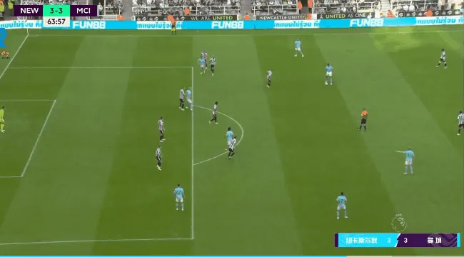
或许你听过这么一个说法，在顶级职业联赛中，普通球员与球星在身体与技术方面或许并没有太大的差距，球星之所以是球星，就因为他们比普通球员多了很多创造力。
那么，我们所说的创造力到底是指什么呢？
- 是一脚令人赞叹的妙传？
- 是一次如鬼如魅的跑位？
- 是一脚漂亮的蝎子摆尾破门？
- 亦或是一次惊为天人的连续过人？
★
这些都是球场创造力的具体表现，那么创造力的本质是什么呢？
青训阶段，我们又应该如何通过合理的训练安排来培养孩子们的创造力呢？
今天就来跟大家聊一聊球场上的创造力。
#
什么是创造力
讨论之前，要先定义创造力的概念，我们来看几个例子：
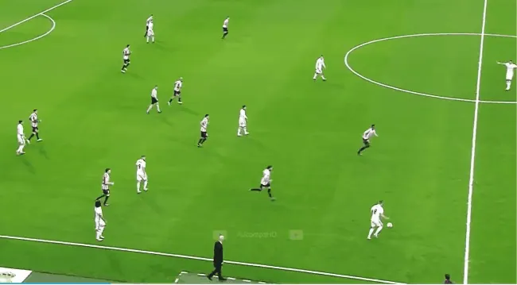
这脚传球算是一脚有创造力的传球吗？
我们给出的答案是否定的，因为这脚传球的选择是显而易见的，防守阵型已经移动到左路，而弱侧有空当，这脚长传是一个常规选择，我们可以说，克罗斯的长传精准、视野开阔、选择合理，但这脚传球远谈不上创造力
相反，同样的情况下，这才是有创造力的选择：
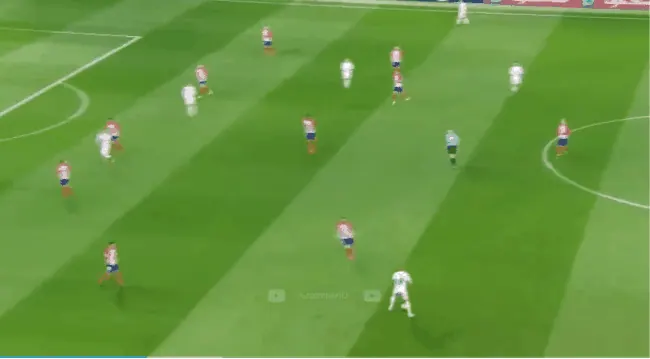
当所有人都觉得你要长传转移时，你却选择了过人
再看下面这脚传球：
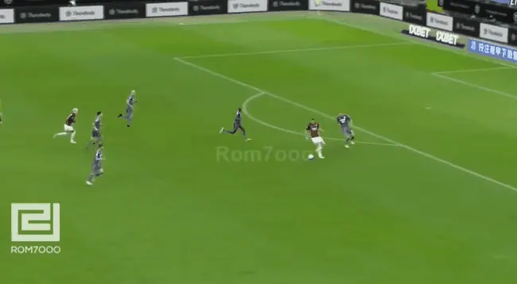
大家都觉得伊布已经陷入包夹，很难转身和身后插上的队友取得联系，此时伊布挑球，不转身蝎子摆尾直接传给身后插上的队友，瞬间打开局面
还有基米希这个球：
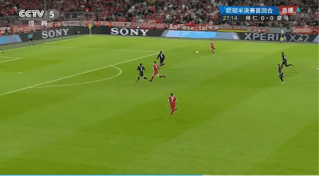
大家包括对手都认为他要传中，后点也有空当，但基米希意想不到的小角度直接选择射门，完成进球
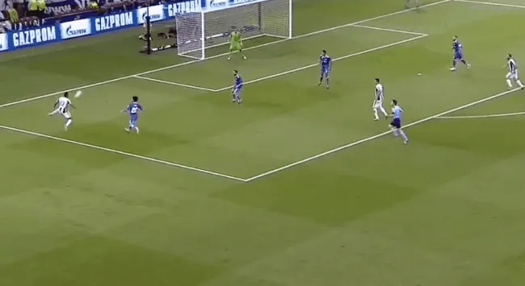
对手三人已经切断了曼朱基奇和禁区内队友的连线，一脚出其不意的倒钩，直接完成破门
意外性、打破常规，才是创造力的核心
当然，你这个意外的选择还得是有效的
你在后场朝自己球门做马赛回旋，那不叫创造力
所谓创造力，既意外又有效
有想象力，能够打破常规，跳出常规战术决策的条条框框，令人意想不到；
有决断力，要有能力了解分析当前的局势，要能有效的解决眼下面对的问题，让球队获利；
想象力+决断力，做出打破常规又能让球队获利的选择，这才是球场创造力的本质
#
创造力的培养
明确了创造力是什么，就可以引申出下一个问题，如何在青训过程中培养孩子的创造力呢？
创造力是意外+有效，怎么样才能让行为是有效的呢？首先球员需要在球场上有能力明确当下的局势并作出判断。
我们看11年欧冠巴萨对AC米兰的这场比赛中下面这个画面
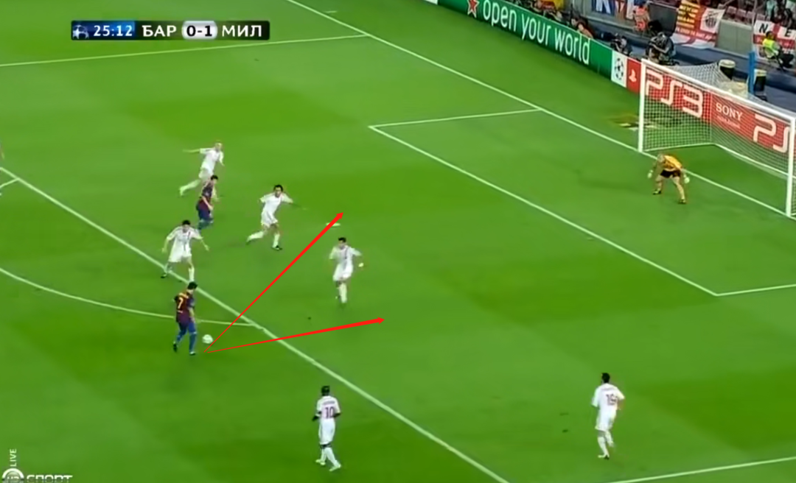
比利亚面对对手的包夹，直接射门以及地面向前传递的路径已经基本被封死，常规的选择此次进攻已经结束，那就再想想办法吧。
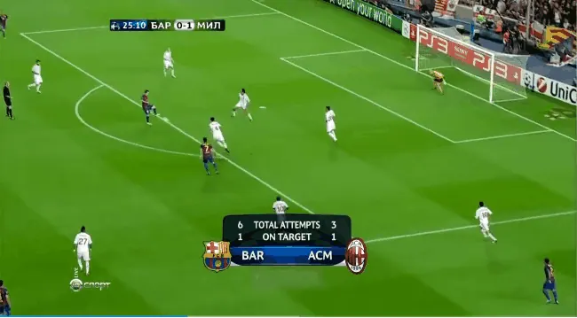
于是，比利亚尝试挑传防线身后，如果球过去了，就能造成威胁，如果没过去，也无伤大雅，不会给球队造成更多的负面影响，即这次的选择期望收益为正。
做出这些判断的前提，是比利亚对场上局势有着清楚的观察和掌握，并且根据掌握的信息进行判断。
当然，这场比赛最有创造力的画面是下面这个
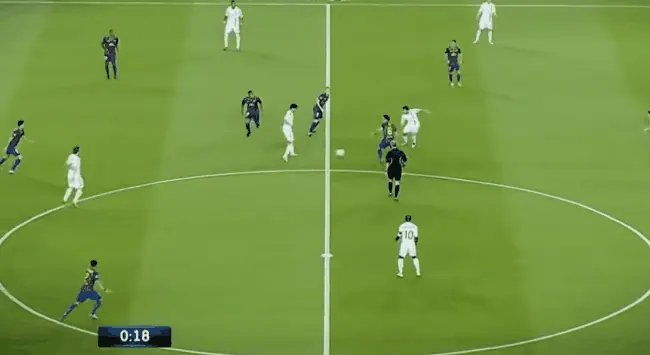
因此，对于孩子们来说，培养他们创造力的前提是让他们有在场上观察思考决策的能力，要能理解场上的战术与局势，能做出期望收益为正的选择。
想要打破常规，先要掌握常规
关于培养孩子观察思考决策能力，在之前有过详述，这里就不再赘述，大家可以参考之前的文章
光有观察思考还是不够的，我们还要在训练中构建各种场景，帮助球员提升他们的决策能力，比如下面这个训练中，就能通过小比赛的形式，训练孩子们在控球时的决策能力，同时定向的训练了利用边路或肋部高位队友的回做完整整体推进。
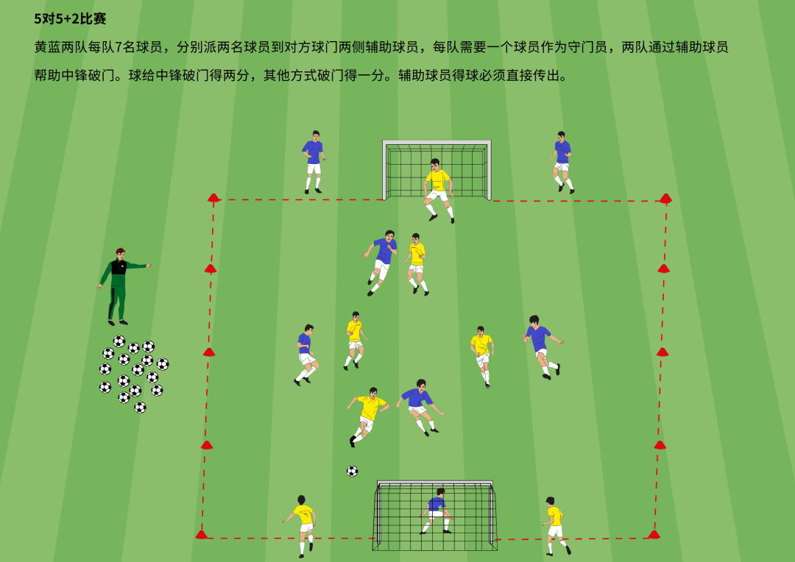
详细指导要点见：
视频教案-5对5+5
在这种形式的训练中，要注意的是，教练在给孩子明确设置与规则后，不要给孩子进行任何额外的指导，要让孩子在设置的场景中自行观察思考，以便提升他们的思维决策能力。同时，在孩子们表现出色，完成有创造力的传球或是假动作后，一定不要吝啬我们的赞美与鼓励。
慕尼黑足球学校为大家准备了近百种针对不同场景的游戏比赛练习，而且还在不断更新中，点击下方小程序链接即可访问：
★
但仅有上面这些，对于培养一名有创造力的球员来说，还是不够的。我们还需要让孩子产生创造力的原动力。
具体来说，就是让孩子在训练比赛中，始终处于一个正反馈的环境中，让他们保持对足球的热爱，让他们有充足的自信心。
创造的前提是自发的，发自内心的，人类历史上任何一部伟大的作品都是如此，靠逼迫与负反馈是无法产生的。

如果长期处于负反馈环境中，训练比赛中出错会受到批评，孩子们在比赛中往往是这样的想法：
- “我不能失误，失误了会被喷”
- “赢球的事先往后放一放，我先保证不失误”
- “这个球先稳一波，先停好再看”
这样的心态下，是不会产生任何创造力的
教练要帮助孩子构建一个正反馈的环境
孩子们在训练比赛中一些创造性的选择，教练一定是要先鼓励的，即便这个创造性的选择在教练看来不是那么的合理。
要让孩子知道，创造是被鼓励的，你可以充分发挥自己的想象力。随着训练科目的推进，孩子们在场上的决策会越来越合理，自信心也会逐渐构建起来。
只有相信自己有改变局面的能力，创造力才会产生
创造改变局面->受到鼓励收获快乐->建立信心->投入更多->更多的创造力
那些我们耳熟能详的球星，他们的足球世界中，有这样一个正向循环存在，而这个循环的开始，很可能就是儿时家长或者教练的一句夸奖和鼓励
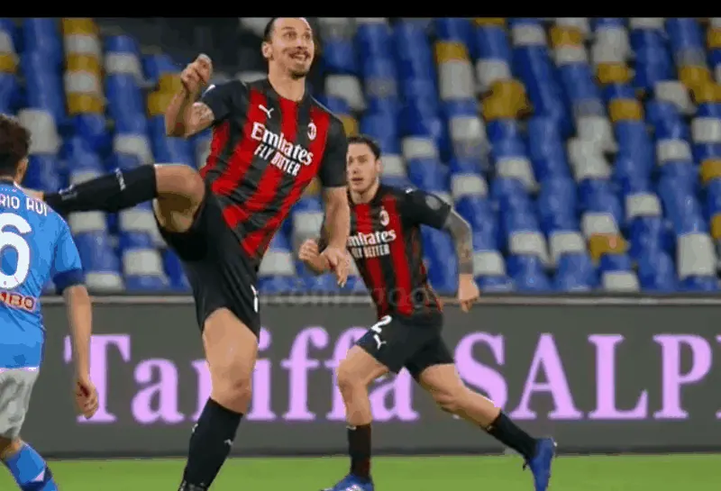
发自内心的笑容是无法掩藏的，他们不光是在持续创造，更是在持续收获快乐。
当笑容消失，踢球不再追求的是快乐，那创造力也会随之消失
快乐与创造是相伴的，快乐才是创造的源泉。
当你的孩子们能够在比赛中保持笑容，那你的队伍一定是富有创造力的。
不要忘了，足球从一开始就是一项游戏，足球最本真的目的就是带来快乐。

文字与图片版权归各自权利人所有；排版根据抓取内容整理。